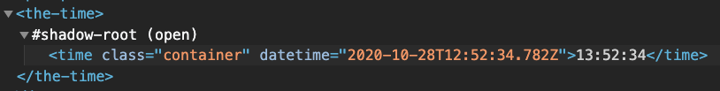

Write some javascript code that creates a text node containing the text "Hello World!" and put this node into the p-element with id="step01_hello" (p#step01_hello)
Create a h3-elemenet containing the text "This is a sub headline" and put it after the p-elemenet containing this text.
But before this p-element.
Create a h3-element containing the text "This is a sub headline" and put it after the forth h2-element (having the text "Exercise 3") in the document.
Change the color to "red" on the h2-element above (containing the text "Excercise 4 - Style")
Create image elements and set it's source to the images (autumn.jpeg and pumpkin.jpeg) in the images-folder. Do not forget the alt-text. Place the images in the div below with class "images".
Use a DocumentFragment to create 10 li-element and add it to ul#list06
PS. Checkout the documentation for DocumentFragment on MDN.
Use the template (provided in the document <head> section) to create 5 li-elements with links to pages of your choise. Add the li-elements to the ul#list07. (It could be the same link in every li-element)
Now it is time to add your first web component to the page. In this project a web component named "tiny-tune" placed. Your task is to add that web-component inside the div#step08. The component is finished so you should not modify the code inside the component. You are free to add the component in any way you like and multiple times. (Using HTML-notation or using the DOM-api)
Now it is time to create your first Web Component. The "the-time"-component. It is a simple one.:

Recommended reading: